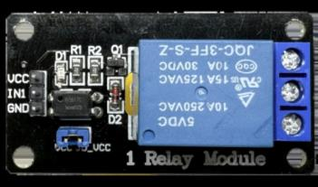
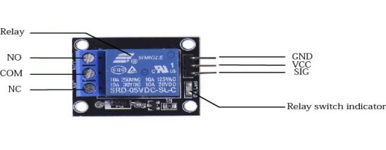

1 CHANNEL RELAY MODULE
1 Channel Relay Module
တစ်ခုမှာ ပါဝင်တဲ့ အဓိက အစိတ်အပိုင်းများနဲ့ ၎င်းတို့ရဲ့ လုပ်ဆောင်ချက်များမှာ အောက်ပါအတိုင်း ဖြစ်ပါသည်။


အဓိက အစိတ်အပိုင်းများ
-
Relay (အပြာရောင် Box)
လျှပ်စစ်သံလိုက်စနစ်ကို အသုံးပြုပြီး High Voltage / Current
ဝါယာလမ်းကြောင်းများကို အဖွင့်အပိတ် ပြုလုပ်ပေးသည့်
အဓိကအစိတ်အပိုင်း ဖြစ်သည်။
-
Terminal Connector (3-Pin Screw Block)
Mains လျှပ်စစ်ကြိုးများကို ချိတ်ဆက်ရန် အသုံးပြုပါတယ်။
NO (Normally Open), COM (Common), NC (Normally Closed)
ဆိုပြီး Terminal သုံးခု ပါဝင်သည်။
-
Transistor (Q1)
Microcontroller မှလာတဲ့ နည်းပါးတဲ့ Current Signal ကို အသုံးပြုပြီး
Relay Coil ကို မောင်းနှင်ပေးပါတယ်။
-
Flyback Diode (D2)
Relay Coil ကို ပိတ်လိုက်ချိန်မှာ ဖြစ်ပေါ်လာနိုင်တဲ့
High Voltage Back-EMF Spike များကြောင့်
Transistor နှင့် အခြား Circuit အစိတ်အပိုင်းများ မပျက်စီးအောင်
ကာကွယ်ပေးရန်အသုံးပြုထားခြင်းဖြစ်သည်။
-
LED Indicators
Power LED (D1) သည် Module သို့ Power ရောက်ရှိနေကြောင်း
ပြသပေးပါတယ်။
Status LED သည် Relay အလုပ်လုပ်နေချိန်တွင်
လင်းပြပေးပါတယ်။
-
Resistors (R1, R2)
Circuit အတွင်း Current ကို ထိန်းညှိပေးပြီး
LED နှင့် Transistor ကို ကာကွယ်ပေးသည်။
-
Input Pins (Male Headers)
Microcontroller နှင့် ချိတ်ဆက်ရန် အသုံးပြုပါတယ်။
VCC: Power Supply (5V)
GND: Ground (0V)
IN: Relay ကို ထိန်းချုပ်မည့် Trigger Input Signal Pin
CIRCUIT DIAGRAM အလုပ်လုပ်ပုံ
1. Input & Power Section
VCC & GND:
Module ကို အလုပ်လုပ်စေရန် Power နှင့် Ground ပေးသွင်းသည့် Pin များ ဖြစ်ပြီး။
Power ရောက်ရှိပါက D1 Power LED လင်းနေမည်။
IN (Input Pin):
Microcontroller (Arduino, ESP32 စသည်) မှ Trigger Signal ပေးပို့ရာ Pin ဖြစ်ပါသည်။
Optocoupler (PC817):
Microcontroller ဘက်ခြမ်းနှင့် Relay ဘက်ခြမ်းကို
Optical Isolation နည်းလမ်းဖြင့် ခွဲထုတ်ပေးပြီး
Relay ဘက်မှ ဖြစ်လာနိုင်သည့် Electrical Disturbance များ
Microcontroller ဘက်သို့ တိုက်ရိုက် မကူးစက်စေရန် ကူညီပေးသည်။
2. Driver & Protection Section
Transistor (Q1):
Optocoupler မှ Signal ရရှိသောအခါ Transistor အလုပ်လုပ်ပြီး
Relay Coil အတွင်း Current စီးဆင်းစေကာ
Electromagnetic Field ဖြစ်ပေါ်စေပါသည်။
Status LED:
Input Signal ရရှိပြီး Transistor ပွင့်သွားပါက Relay အလုပ်လုပ်နေကြောင်း ပြသရန်အတွက် Status LED လင်းလာမည် ဖြစ်သည်။
Flyback Diode (D2):
Relay Coil ကို ပိတ်လိုက်ချိန်တွင် ဖြစ်ပေါ်လာနိုင်သည့်
Back-EMF Voltage Spike ကို လမ်းကြောင်းလွှဲပေးပြီး
Transistor ကို ကာကွယ်ပေးပါတယ်။
3. Output Section
Relay Coil မှ Magnetic Field ဖြစ်ပေါ်လာသောအခါ
Mechanical Contact အနေအထား ပြောင်းလဲသွားပြီး
COM သည် NC မှ NO ဘက်သို့ ပြောင်းချိတ်ဆက်သွားသည်။
COM (Common):
Common Terminal ဖြစ်ပါတယ်။
NC (Normally Closed):
Relay မအလုပ်လုပ်နေချိန်တွင် COM နှင့် ဆက်နေသော Terminal ဖြစ်ပါတယ်။
NO (Normally Open):
Relay မအလုပ်လုပ်နေချိန်တွင် COM နှင့် မဆက်ထားဘဲ
Relay အလုပ်လုပ်သောအခါ COM နှင့် ဆက်သွားသော Terminal ဖြစ်ပါတယ်။
1 CHANNEL RELAY MODULE — အဓိက လမ်းကြောင်း
Input Section:
Microcontroller မှ IN Pin သို့ Trigger Signal ပေးလိုက်သောအခါ
Optocoupler (PC817) စတင်အလုပ်လုပ်သည်။
Driver Section:
Optocoupler မှတစ်ဆင့် Transistor (Q1) အလုပ်လုပ်ပြီး
Relay Coil အတွင်း Current စီးဆင်းစေပါတယ်။
Flyback Diode (D2) က Back-EMF Spike ကို ကာကွယ်ပေးပါတယ်။
Output Section:
Relay Coil ရဲ့ Magnetic Field ကြောင့် Contact ပြောင်းလဲသွားပြီး
COM သည် NO ဘက်သို့ ဆက်သွား၍ load များကို run စေသည်။
SPDT (Single Pole Double Throw)
SPDT ဆိုတာ Single Pole Double Throw
ရဲ့ အတိုကောက်ဖြစ်ပြီး Relay တွေမှာ အသုံးများတဲ့
Switch Contact အမျိုးအစားတစ်ခု ဖြစ်သည်။
Single Pole (SP)
ထိန်းချုပ်မည့် Common Terminal တစ်ခုတည်း
(COM) ပါဝင်တာကို ဆိုလိုသည်။
Double Throw (DT)
COM မှ ထွက်လာသော လမ်းကြောင်းကို
NO သို့မဟုတ် NC
ဘက်နှစ်ခုအနက် တစ်ခုသို့ ပြောင်းချိတ်ဆက်ပေးနိုင်တာကို ဖော်ပြခြင်းဖြစ်သည်။
SPDT Switch အလုပ်လုပ်ပုံ
-
Normally Closed (NC) အခြေအနေ
Relay Coil ကို မမောင်းထားချိန်တွင်
COM သည် NC နှင့် ဆက်နေမည်ဖြစ်သည်။(ဥပမာ - Relay မီးပိတ်ထားသော်လည်း NC တွင် ချိတ်ထားသော မီးလုံးသည် လင်းနေမည် ဖြစ်ပါတယ်)
-
Normally Open (NO) အခြေအနေ
Relay Coil ကို မောင်းလိုက်သောအခါ
Contact သည် COM မှ NO ဘက်သို့ ပြောင်းချိတ်ဆက်သွားပါတယ်။
အနှစ်ချုပ်:
SPDT Relay ဆိုသည်မှာ Input Common Line တစ်ခုဖြစ်သော COM ကို
Output Contact နှစ်ခုဖြစ်သည့် NO နှင့် NC အနက်
တစ်ခုသို့ အခြေအနေအလိုက် ပြောင်းချိတ်ဆက်ပေးနိုင်သည့် Switch အမျိုးအစား ဖြစ်ပါတယ်။
OPTOCOUPLER
Optocoupler က Microcontroller ဘက်ခြမ်းနှင့်
Relay ဘက်ခြမ်းကို Electrical Isolation ပြုလုပ်ပေးတဲ့
အစိတ်အပိုင်း ဖြစ်သည်။
1. Electrical Isolation
Optocoupler အတွင်းမှာ Input ဘက်နှင့် Output ဘက်ကို
တိုက်ရိုက် Electrical Connection မလုပ်ထားဘဲ
Isolation Barrier တစ်ခုဖြင့် ခွဲထားပါတယ်။
• တိုက်ရိုက် ကြိုးဆက်မထားပါ: Optocoupler (PC817) Chip လေးရဲ့ အတွင်းထဲမှာ Microcontroller (Arduino) နဲ့ ချိတ်ဆက်ထားတဲ့
လမ်းကြောင်း နဲ့ Relay ဘက်ကို ချိတ်ဆက်ထားတဲ့ လမ်းကြောင်း ၂ ခုဟာ
လျှပ်ကူးပစ္စည်း (ကြိုး/သတ္တု) တစ်ခုမျှ တိုက်ရိုက် ထိစပ်မနေပါဘူး။
Physical Air Gap (ရူပဗေဒအရ လေဟာနယ်ခြားထားခြင်းဖြစ်သည်)
Chip အတွင်းထဲမှာ ကြားခံအဖြစ် အလင်းဖြတ်သန်းနိုင်တဲ့ လျှပ်စစ်ဓာတ်မကူးစက်နိုင်သော Insulation ပစ္စည်း
(Silicon/Plastic) ကိုသာ ခြားထားတာ ဖြစ်ပါတယ်။
2. အလင်းဖြင့် Signal ပို့ခြင်း
Microcontroller ဘက်မှာ Signal ပေးလိုက်သောအခါ
အတွင်းရှိ IR LED လင်းလာပါတယ်။
အဲဒီအလင်းကို တစ်ဖက်ရှိ Phototransistor က
လက်ခံပြီး Output ဘက်မှာ Signal ဖြစ်ပေါ်စေသည်။
ဒါကြောင့် Electrical Signal ကို တိုက်ရိုက် ကြိုးဖြင့် မပို့ဘဲ
အလင်း ဖြင့် Signal ကူးပြောင်းပေးတာ ဖြစ်တယ်။
Back-EMF / Electrical Surge ဖြစ်လာသောအခါ
-
Relay Coil ကို ပိတ်လိုက်ချိန်တွင်
Back-EMF Voltage Spike ဖြစ်ပေါ်နိုင်ပါတယ်။
-
Relay ဘက်ခြမ်းရှိ Circuit အစိတ်အပိုင်းများက
အဲဒီ Surge ကို ခံရနိုင်ပါတယ်။
-
Optocoupler ရဲ့ Isolation ကြောင့်
Relay ဘက်ရှိ Electrical Voltage ကို
Microcontroller ဘက်သို့ တိုက်ရိုက် မကူးစက်စေရန်
အကာကွယ်ပေးသည်။
အနှစ်ချုပ်:
Optocoupler ဆိုတာ Microcontroller နဲ့ Relay Circuit ကြားမှာ
အလင်းကို အသုံးပြုပြီး Electrical Isolation ပေးထားတဲ့
Optical Barrier တစ်ခု ဖြစ်ပါတယ်။
FLYBACK DIODE (D2)
1. Back-EMF ဆိုတာ ဘာလဲ
Relay ရဲ့အတွင်းမှာ လျှပ်စစ်သံလိုက်စက်ကွင်း ဖြစ်ပေါ်စေတဲ့
Coil ပါဝင်ပါတယ်။
Coil အတွင်း Current စီးနေချိန်မှာ
Magnetic Field အဖြစ် Energy သိုလှောင်ထားပါတယ်။
Relay ကို ပိတ်လိုက်ချိန်မှာ Magnetic Field က
ရုတ်တရက် Collapse ဖြစ်ပြီး
Coil အတွင်းမှာ Voltage Spike ဖြစ်ပေါ်နိုင်ပါတယ်။
2. Flyback Diode တပ်ဆင်ပုံ
Flyback Diode ကို Relay Coil နှင့်
Parallel ချိတ်ဆက်ထားပါတယ်။
Relay ပုံမှန်အလုပ်လုပ်နေချိန်မှာ Diode က
Reverse Bias ဖြစ်နေတဲ့အတွက်
ပုံမှန် Current မစီးပါဘူး။
3. Back-EMF ကို ကာကွယ်ပေးပုံ
-
Voltage Spike ပေါ်လာခြင်း:
Relay Coil ကို ပိတ်လိုက်သောအခါ
Coil ရဲ့ Current ကို ရုတ်တရက် မဖြတ်နိုင်တာကြောင့်
Reverse Voltage ဖြစ်ပေါ်လာနိုင်ပါတယ်။
-
Diode Conduct ဖြစ်ခြင်း:
Voltage အခြေအနေ ပြောင်းလဲသောအခါ
Flyback Diode သည် Forward Bias ဖြစ်လာပြီး
Current စီးနိုင်အောင် လမ်းဖွင့်ပေးပါတယ်။
-
Freewheeling Loop:
Coil ထဲမှာ သိုလှောင်ထားတဲ့ Energy ကို
Coil နှင့် Diode အကြားမှာ Current Loop အဖြစ်
လှည့်ပတ်စီးဆင်းစေပြီး Voltage Spike ကို လျော့ချစေပါတယ်။
အနှစ်ချုပ်:
Flyback Diode သည် Relay Coil ကို ပိတ်လိုက်ချိန်မှာ
ဖြစ်ပေါ်လာနိုင်သည့် Back-EMF Voltage Spike ကို
လမ်းကြောင်းလွှဲပေးပြီး Transistor နှင့်
အခြား Circuit အစိတ်အပိုင်းများကို ကာကွယ်ပေးသည့်
Protection Device တစ်ခု ဖြစ်ပါတယ်။
Note:
Circuit Diagram ပုံများကို နောက်ပိုင်းတွင် ထည့်သွင်းနိုင်ပါသည်။Intended as a training aid for staff only.